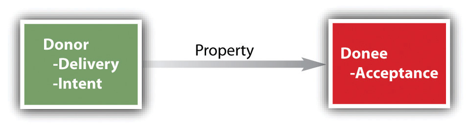

Most legal issues about personal property center on its acquisition. Acquisition by purchase is the most common way we acquire personal property, but there are at least five other ways to legally acquire personal property: (1) possession, (2) finding lost or misplaced property, (3) gift, (4) accession, and (5) confusion.
It is often said that “possession is nine-tenths of the law.” There is an element of truth to this, but it’s not the whole truth. For our purposes, the more important question is, what is meant by “possession”? Its meaning is not intuitively obvious, as a moment’s reflection will reveal. For example, you might suppose than you possess something when it is physically within your control, but what do you say when a hurricane deposits a boat onto your land? What if you are not even home when this happens? Do you possess the boat? Ordinarily, we would say that you don’t, because you don’t have physical control when you are absent. You may not even have the intention to control the boat; perhaps instead of a fancy speedboat in relatively good shape, the boat is a rust bucket badly in need of repair, and you want it removed from your front yard.
Even the element of physical domination of the object may not be necessary. Suppose you give your new class ring to a friend to examine. Is it in the friend’s possession? No: the friend has custody, not possession, and you retain the right to permit a second friend to take it from her hands. This is different from the case of a bailment, in which the bailor gives possession of an object to the bailee. For example, a garage (a bailee) entrusted with a car for the evening, and not the owner, has the right to exclude others from the car; the owner could not demand that the garage attendants refrain from moving the car around as necessary.
From these examples, we can see that possession or physical control must usually be understood as the power to exclude others from using the object. Otherwise, anomalies arise from the difficulty of physically controlling certain objects. It is more difficult to exercise control over a one-hundred-foot television antenna than a diamond ring. Moreover, in what sense do you possess your household furniture when you are out of the house? Only, we suggest, in the power to exclude others. But this power is not purely a physical one: being absent from the house, you could not physically restrain anyone. Thus the concept of possession must inevitably be mixed with legal rules that do or could control others.
Possession confers ownership in a restricted class of cases only: when no person was the owner at the time the current owner took the object into his possession. The most obvious categories of objects to which this rule of possession applies are wild animals and abandoned goods. The rule requires that the would-be owner actually take possession of the animal or goods; the hunter who is pursuing a particular wild animal has no legal claim until he has actually captured it. Two hunters are perfectly free to pursue the same animal, and whoever actually grabs it will be the owner.
But even this simple rule is fraught with difficulties in the case of both wild animals and abandoned goods. We examine abandoned goods in Section 36.2.2 "Lost or Misplaced Property". In the case of wild game, fish in a stream, and the like, the general rule is subject to the rights of the owner of the land on which the animals are caught. Thus even if the animals caught by a hunter are wild, as long as they are on another’s land, the landowner’s rights are superior to the hunter’s. Suppose a hunter captures a wild animal, which subsequently escapes, and a second hunter thereafter captures it. Does the first hunter have a claim to the animal? The usual rule is that he does not, for once an animal returns to the wild, ownership ceases.
At common law, a technical distinction arose between lost and misplaced property. An object is lost if the owner inadvertently and unknowingly lets it out of his possession. It is merely misplaced if the owner intentionally puts it down, intending to recover it, even if he subsequently forgets to retrieve it. These definitions are important in considering the old saying “Finders keepers, losers weepers.” This is a misconception that is, at best, only partially true, and more often false. The following hierarchy of ownership claims determines the rights of finders and losers.
First, the owner is entitled to the return of the property unless he has intentionally abandoned it. The finder is said to be a quasi-bailee for the true owner, and as bailee she owes the owner certain duties of care. The finder who knows the owner or has reasonable means of discovering the owner’s identity commits larceny if she holds on to the object with the intent that it be hers. This rule applies only if the finder actually takes the object into her possession. For example, if you spot someone’s wallet on the street you have no obligation to pick it up; but if you do pick it up and see the owner’s name in it, your legal obligation is to return it to the rightful owner. The finder who returns the object is not automatically entitled to a reward, but if the loser has offered a reward, the act of returning it constitutes performance of a unilateral contract. Moreover, if the finder has had expenses in connection with finding the owner and returning the property, she is entitled to reasonable reimbursement as a quasi-bailee. But the rights of the owner are frequently subject to specific statutes, such as the one discussed in Bishop v. Ellsworth in Section 36.4.1 "Lost or Misplaced Property".
Second, if the owner fails to claim the property within the time allowed by statute or has abandoned it, then the property goes to the owner of the real estate on which it was found if (1) the finder was a trespasser, (2) the goods are found in a private place (though what exactly constitutes a private place is open to question: is the aisle of a grocery store a private place? the back of the food rack? the stockroom?), (3) the goods are buried, or (4) the goods are misplaced rather than lost.
If none of these conditions apply, then the finder is the owner. These rules are considered in the Bishop case, (see Section 36.4.1 "Lost or Misplaced Property").
A giftA voluntary transfer of property without consideration or compensation. is a voluntary transfer of property without consideration or compensation. It is distinguished from a sale, which requires consideration. It is distinguished from a promise to give, which is a declaration of an intention to give in the future rather than a present transfer. It is distinguished from a testamentary disposition (will), which takes effect only upon death, not upon the preparation of the documents. Two other distinctions are worth noting. An inter vivosA gift made between living persons. (enter VYE vos) gift is one made between living persons without conditions attached. A causa mortisA gift made by someone in contemplating death in the near future. (KAW zuh mor duz) gift is made by someone contemplating death in the near future.
Figure 36.1 Gift Requirements
To make an effective gift inter vivos or causa mortis, the law imposes three requirements: (1) the donor must deliver a deed or object to the donee; (2) the donor must actually intend to make a gift, and (3) the donee must accept (see Figure 36.1 "Gift Requirements").
Although it is firmly established that the object be delivered, it is not so clear what constitutes delivery. On the face of it, the requirement seems to be that the object must be transferred to the donee’s possession. Suppose your friend tells you he is making a gift to you of certain books that are lying in a locked trunk. If he actually gives you the trunk so that you can carry it away, a gift has been made. Suppose, however, that he had merely given you the key, so that you could come back the next day with your car. If this were the sole key, the courts would probably construe the transfer of the key as possession of the trunk. Suppose, instead, that the books were in a bank vault and the friend made out a legal document giving both you and him the power to take from the bank vault. This would not be a valid gift, since he retained power over the goods.
The intent to make a gift must be an intent to give the property at the present time, not later. For example, suppose a person has her savings account passbook put in her name and a friend’s name, intending that on her death the friend will be able to draw out whatever money is left. She has not made a gift, because she did not intend to give the money when she changed the passbook. The intent requirement can sometimes be sidestepped if legal title to the object is actually transferred, postponing to the donee only the use or enjoyment of the property until later. Had the passbook been made out in the name of the donee only and delivered to a third party to hold until the death of the donor, then a valid gift may have been made. Although it is sometimes difficult to discern this distinction in practice, a more accurate statement of the rule of intent is this: Intention to give in the future does not constitute the requisite intent, whereas present gifts of future interests will be upheld.
In the usual case, the rule requiring acceptance poses no difficulties. A friend hands you a new book and says, “I would like you to have this.” Your taking the book and saying “thank-you” is enough to constitute your acceptance. But suppose that the friend had given you property without your knowing it. For example, a secret admirer puts her stock certificates jointly in your name and hers without telling you. Later, you marry someone else, and she asks you to transfer the certificates back to her name. This is the first you have heard of the transaction. Has a gift been made? The usual answer is that even though you had not accepted the stock when the name change was made, the transaction was a gift that took effect immediately, subject to your right to repudiate when you find out about it. If you do not reject the gift, you have joint rights in the stock. But if you expressly refuse to accept a gift or indicate in some manner that you might not have accepted it, then the gift is not effective. For example, suppose you are running for office. A lobbyist whom you despise gives you a donation. If you refuse the money, no gift has been made.
Even though the requirements of delivery, intent, and acceptance apply to gifts causa mortis as well as inter vivos, a gift causa mortis (one made in contemplation of death) may be distinguished from a gift inter vivos on other grounds. The difference between the two lies in the power of the donor to revoke the gift before he dies; in other words, the gift is conditional on his death. Since the law does not permit gifts that take place in the future contingent on some happening, how can it be that a gift causa mortis is effective? The answer lies in the nature of the transfer: the donee takes actual title when the gift is made; should the donor not in fact die or should he revoke the gift before he dies, then and only then will the donee lose title. The difference is subtle and amounts to the difference between saying “If I die, the watch is yours” and “The watch is yours, unless I survive.” In the former case, known as a condition precedent, there is no valid gift; in the latter case, known as a condition subsequent, the gift is valid.
Every state has adopted either the Uniform Gifts to Minors Act (UGMA) or the Uniform Transfers to Minors Act (UTMA), both of which establish the manner by which irrevocable gifts are made to minors. Under these acts, a custodian holds the gifts until the minor reaches the age of eighteen, twenty-one, or twenty-five, depending on state law. Gifts under UGMA are limited for the most part to money or securities, while UTMA allows other types of gifts as well, such as real estate or tangible personal property.
The federal government and many states impose gift taxes on gifts above a certain dollar amount.
An accessionSomething that is added to what one already possesses. is something that is added to what one already possesses. In general, the rule is that the owner of the thing owns the additional thing that comes to be attached to it. For example, the owner of a cow owns her calves when she gives birth. But when one person adds value to another person’s property, either through labor alone or by adding new materials, the rule must be stated somewhat differently. The general rule is this: when goods are added to goods, the owner of the principal goods becomes the owner of the enhanced product. For example, a garage uses its paint to repaint its customer’s automobile. The car owner, not the painter, is the owner of the finished product.
When someone has wrongfully converted—that is, taken as her own—the property of another, the owner may sue for damages, either to recover his property or its value. But a problem arises when the converter has added to the value of that property. In general, the courts hold that when the conversion is willful, the owner is entitled to the full value of the goods as enhanced by the converter. Suppose that a carpenter enters a ten-acre forest that he knows belongs to his neighbor, cuts down one hundred trees, transports them to his shop, and cuts them up into standard lumber, thus increasing their market value. The owner is entitled to this full value, and the carpenter will get nothing for his trouble. Thus the willful converter loses the value of his labor or materials. If, on the other hand, the conversion was innocent, or at most negligent, the rule is somewhat more uncertain. Generally the courts will award the forest owner the value of the standing timber, giving the carpenter the excess attributable to his labor and transportation. A more favorable treatment of the owner is to give her the full value of the lumber as cut, remitting to the carpenter the value of his expenses.
In accession, the goods of one owner are transformed into a more valuable commodity or are inextricably united with the goods of another to form a constituent part. Still another type of joining is known as confusionWhere personal property is intermingled, negligently or intentionally, with the personal property of others., and it occurs when goods of different owners, while maintaining their original form, are commingled. A common example is the intermingling of grain in a silo. But goods that are identifiable as belonging to a particular person—branded cattle, for instance—are not confused, no matter how difficult it may be to separate herds that have been put together.
When the goods are identical, no particular problem of division arises. Assuming that each owner can show how much he has contributed to the confused mass, he is entitled to that quantity, and it does not matter which particular grains or kernels he extracts. So if a person, seeing a container of grain sitting on the side of the road, mistakes it for his own and empties it into a larger container in his truck, the remedy is simply to restore a like quantity to the original owner. When owners of like substances consent to have those substances combined (such as in a grain silo), they are said to be tenants in common, holding a proportional share in the whole.
In the case of willful confusion of goods, many courts hold that the wrongdoer forfeits all his property unless he can identify his particular property. Other courts have modified this harsh rule by shifting the burden of proof to the wrongdoer, leaving it up to him to claim whatever he can establish was his. If he cannot establish what was his, then he will forfeit all. Likewise, when the defendant has confused the goods negligently, without intending to do so, most courts will tend to shift to the defendant the burden of proving how much of the mass belongs to him.
Other than outright purchase of personal property, there are various ways in which to acquire legal title. Among these are possession, gift, accession, confusion, and finding property that is abandoned, lost, or mislaid, especially if the abandoned, lost, or mislaid property is found on real property that you own.